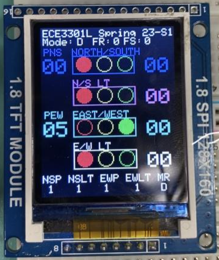

Intersection Simulation

Check out the code here: Github Repository
This project simulates a busy Intersection with left turns and pedestrian crosswalks on all four sides. It uses a light sensor to detect whether it is night or day and switch modes accordingly. It also uses two switches to act as pedestrian crosswalk push buttons, and another 2 switches that can disable the left turn lights. While a button is pressed, the lights will continue as usual, but once the countdown is complete, pedestrians will be allowed to cross and a new countdown starts. There is also a buzzer that beeps every second when a pedestrian crossing countdown is taking place.
On-Screen Acronym List
FR, FS, MR: Not included in this project.
PNS: Pedestrian North/South Crossing.
PEW: Pedestrian East/West Crossing.
N/S LT: North and South Left Turns.
E/W LT: East and West Left Turns.
NSP: Pedestrian North/South Crossing Button.
NSLT: North and South Left Turn Toggle Button.
EWP: Pedestrian East/West Crossing Button.
EWLT: East and West Left Turn Toggle Button.